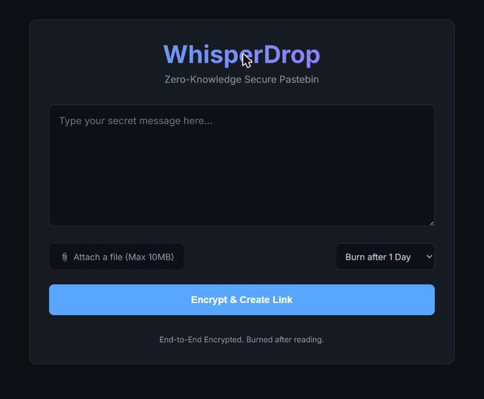
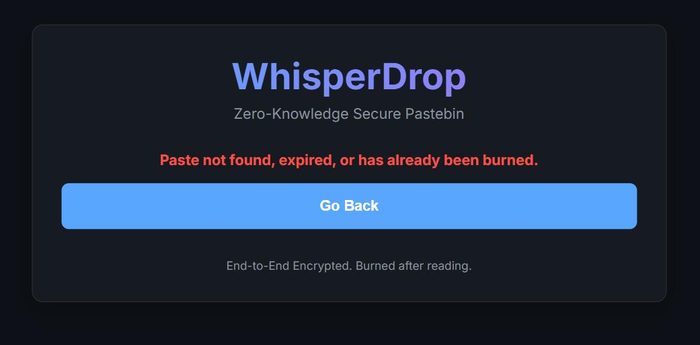
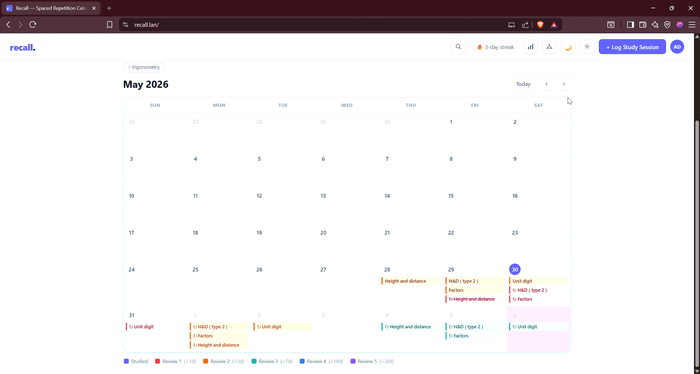

Case studies and the rest of the shelf — security tooling, spaced-repetition software, and product builds.
A burn-after-reading pastebin where the server never sees the plaintext — it can't decrypt what it stores even if it wanted to.


# — URL fragments are never sent in HTTP requests, so it never touches a server logThe hard part wasn't the encryption — it was designing the server to be provably unable to help, not just promising not to.
An offline attack-surface management tool built for air-gapped and confidential pentest engagements — network topology never leaves the machine.
The constraint that shaped everything: a local LLM's context window is small, but a real engagement's attack surface isn't — the map-reduce step exists because the network doesn't get smaller to fit the model.
Anki's spaced-repetition algorithm, wrapped in a calendar you actually want to open — because a scheduler only works if you show up to it.

Anki already has the SM-2 math — that part's a solved problem. The actual work was building a schedule someone wants to open, since a spaced-repetition system is only as good as whether you show up to it.
A SaaS platform I co-founded and helped build to simplify the college application process for students navigating admissions.
Secure, peer-to-peer file transfer in the browser using WebRTC — no uploads, no size limits, no accounts.
Zero-dependency, automated Linux forensics triage script. Safely collects system logs and execution evidence into an AI-ready report.
Parallelised OSINT scraper and media downloader with regex filtering. Built for research and archiving — fast, scriptable.
Terminal UI for scanning ports, identifying what's running, and reserving free ones. Built with Textual for a proper interactive experience.
Know before you prompt. A blazingly fast CLI tool that calculates codebase token costs and detects bloat to optimize AI prompts.
A lightweight, open-source PDF translator with a user-friendly GUI. Seamless translation into multiple global languages.
Batch rename photos and videos using real metadata (EXIF). Sort by file size, name, or actual date taken. Simple GUI.